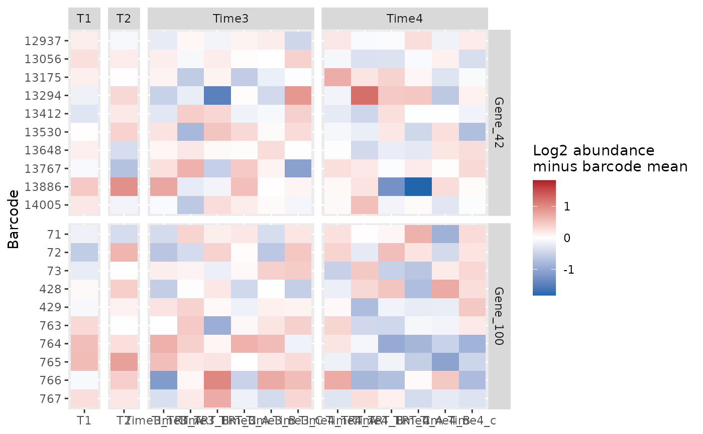

Displays the barcodes of selected genes as a heatmap of log2 normalized abundance. Gene panels retain individual reagents and sample replicates.
Usage
plot_barcode_heatmap(
screenR_Object,
genes,
samples = NULL,
center = c("barcode", "reference", "none"),
reference_samples = NULL,
pseudocount = 1,
column_group = "Day",
barcode_labels = TRUE
)Arguments
- screenR_Object
A normalized ScreenR object.
- genes
The gene identifiers to show, in panel order. All must be present in the object.
- samples
Optional sample identifiers in the desired column order. NULL uses all samples in object order. Within column_group panels, the supplied order is preserved.
- center
"barcode" (default): subtract each barcode's mean log2 abundance across the displayed samples. "reference": subtract its mean log2 abundance across reference_samples. "none": display log2 normalized abundance without centering.
- reference_samples
Sample identifiers for center = "reference". They must be in the object but need not be displayed. Their log2 abundances are averaged, equivalent to a geometric-mean reference after adding the pseudocount. All-zero reference barcodes are allowed and their display depends strongly on the pseudocount.
- pseudocount
Positive finite value added to normalized counts before log2 transformation (default 1). This affects the display only.
- column_group
A colData variable for column panels, "Day" by default. NULL draws a single column panel. Missing values are errors.
- barcode_labels
Whether to label the barcode rows (default TRUE).
Value
A ggplot object. Its data contain Gene, Barcode, Sample, ColumnGroup, Log2Normalized and Value (the displayed quantity).
Details
The default centering emphasizes within-barcode patterns, not absolute abundance or significance. Its zero is the mean of the displayed samples, so changing the selection changes the reference. Neither the colors nor the number of barcode rows represent independent biological replication. No clustering or hypothesis test is performed. The centered color scale is symmetric about zero; the uncentered scale is sequential. The raw counts and normalization are unchanged. No theme is applied; choose appearance in user code with theme_set().
Examples
object <- get0("object", envir = asNamespace("ScreenR"))
plot_barcode_heatmap(object, genes = c("Gene_42", "Gene_100"))
